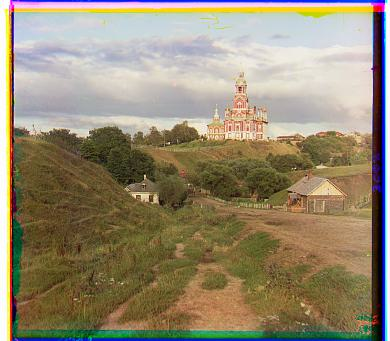

Part 1: Naive Image Alignment
Approach
First, the image was split divied into the three smaller images containing the individual color channels. The images were then aligned by finding the best alignemnt in the x and y directions. The red and blue, and the red and green images were aligned separately. We iterate over a range of dx and dy values to find the best alignment. The best alignment was found by creating a similarity score calculated by the euclidean distance between the two images. The images were cropped before the comparison to remove borders which might interfere with results. The best alignment was calculated by finding the dx and dy values that minimized the similarity score. Finally, the images were aligned using the dx and dy values found, and layered on top of each other to create the final color image.
Results
Figure 1: Cathedral R:(5,2) G:(12,3)

Figure 2: Monastery R:(-3,2) G:(3,2)